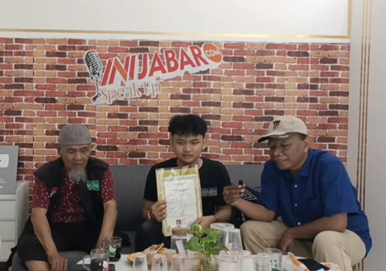
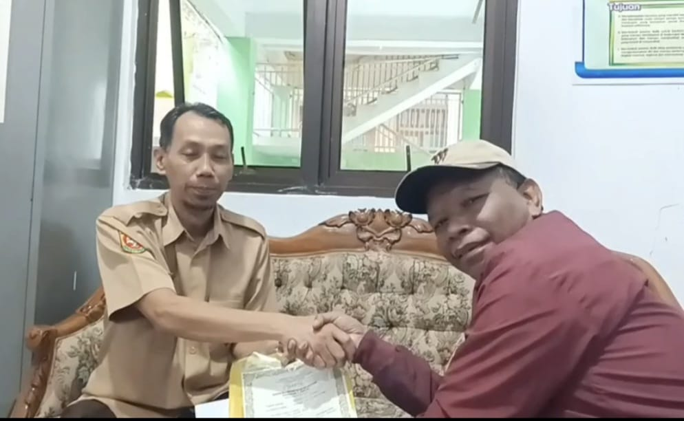

Kota Bekasi - Pimpinan Ini Jabar Peduli membantu mengambil ijazah seorang alumni SMK Permata Bangsa lulusan tahun 2024.
Siswa bernama Muhammad Yusuf Saifulloh yang didampingi ayah nya mengucapkan terimakasih pada jajaran Ini Jabar Peduli yang sudah membantu memberikan ijazahnya.
"Saya mengucapkan terimakasih pak. Saya senang dan ga bisa ngomong apa-apa,"ucap Yusuf. Rabu (5/2/2025).
Setelah kelulusannya di bulan Mei 2024, kata dia, ijazah nya tidak diambilnya dari sekolah karena masih ada tunggakan biaya sebesar Rp 4 juta an lebih.
Sementara itu, Pimpinan Ini Jabar Peduli Iwan Nendi Kurniawan, mengaku ikut senang bisa membantu mendapatkan ijazah Muhammad Yusuf Saifulloh.

"Ya memang dari catatan pihak sekolah, Yusuf masih ada tunggakan biaya sekitar Rp4 juta lebih. Jadi melalui Ini Jabar Peduli kami berkomunikasi dengan pihak sekolah Yusuf,"ujarnya.
Dirinya juga mengucapkan terimakasih pada Kepala Yayasan Al Muawanah, Kepala Sekolah SMK Permata Bangsa yang telah membantu hingga ijazah bisa diberikan ke siswa.
Sekedar diketahui, Muhammad Yusuf Saifulloh merupakan lulusan tahun 2024 yang orang tua nya sudah sepuh dan hanya buruh serabutan.